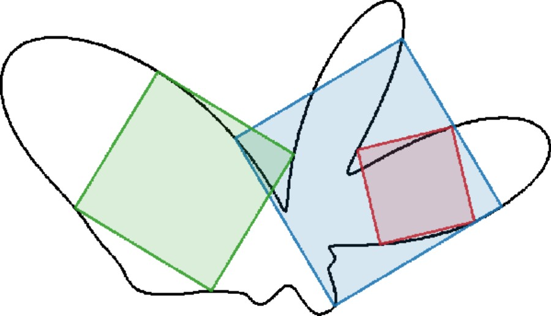
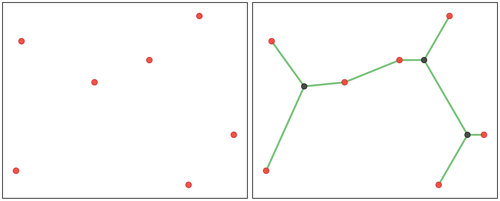
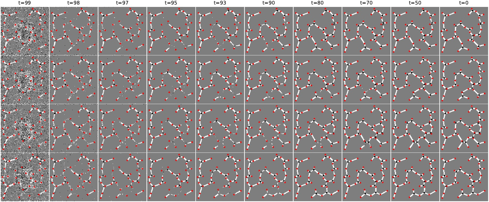
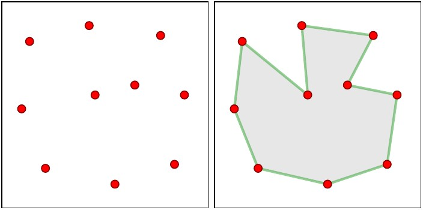
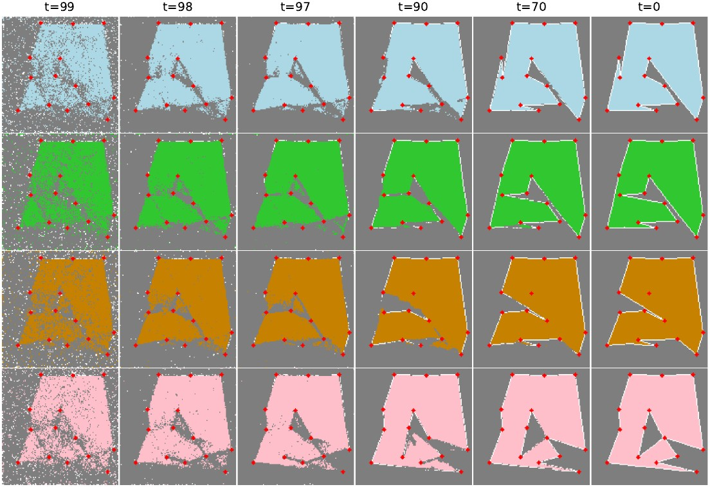

Results
We evaluate our approach on three classical problems. In each case, the same UNet architecture and diffusion framework is applied — only the training data changes.
Inscribed Square Problem

Toeplitz (1911) conjectured that every simple closed curve contains an inscribed square. We render each curve as a binary image (condition) and train the model to generate the corresponding inscribed square image (solution). Different random seeds yield diverse valid squares on the same curve.

Steiner Tree Problem

The Euclidean Steiner Tree Problem asks for the shortest network connecting a set of terminal points. Using the exact same architecture and training paradigm, we render terminal locations as the condition image and optimal Steiner trees as solution images. The model learns to place Steiner points and edges from visual examples alone.

Maximum Area Polygon Problem

Given a set of points, find the simple polygon through all of them with the largest possible area — an NP-hard optimization problem. Again with the same model and paradigm, point locations are rendered as the condition and optimal maximum-area polygons as the solution. The model produces diverse polygon shapes from the same point set across different seeds.
